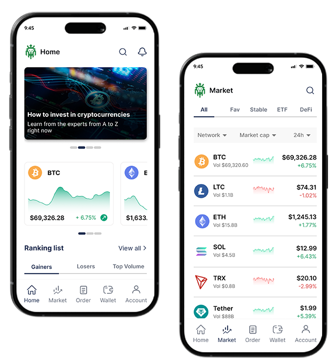
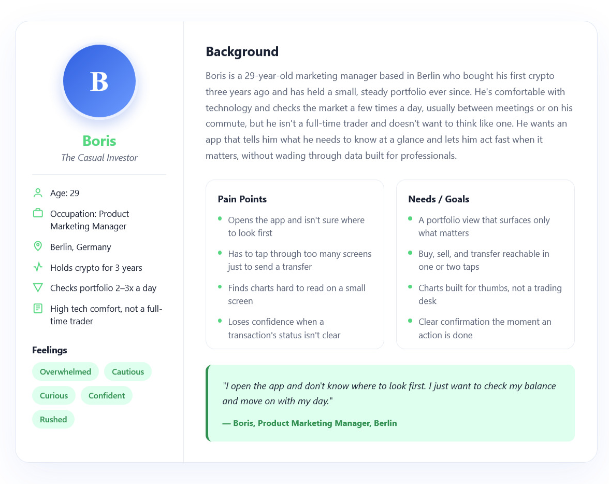
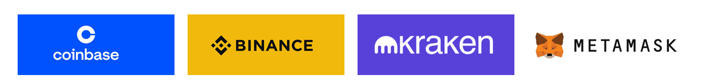
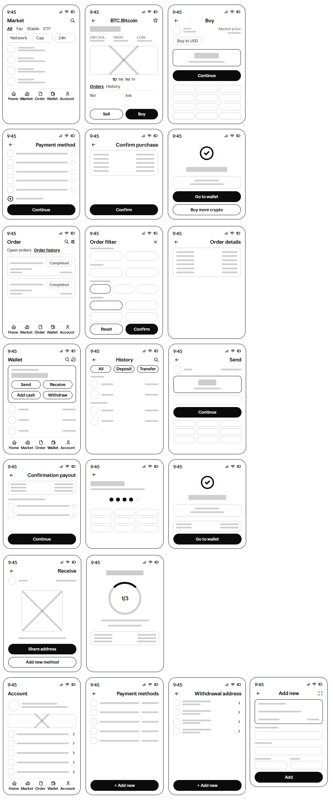
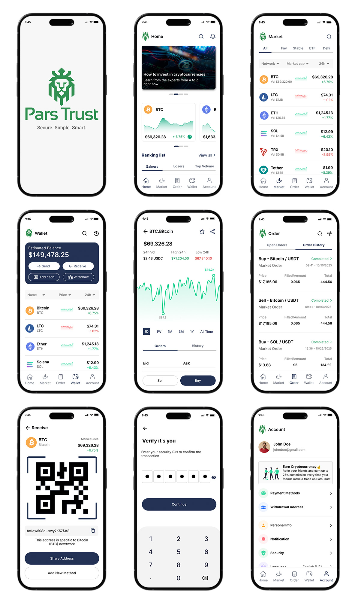

Pars Trust
Mobile Crypto Trading App
Timeline
Jan - Mar 2026
Tools
Figma, Figjam
Role
UI/UX Design, Research, Wireframing, Prototyping, Design System

Project overview
Pars Trust needed a mobile crypto trading app that could compete in a crowded market — not by adding more features, but by doing less, better. My role as UI/UX designer was to design an experience that feels fast and trustworthy: one where users can check their portfolio, read the market, and act, without friction getting in the way. The result is a clean, mobile-first trading experience built around three core actions — buy, sell, and transfer — with a visual system calm enough for a high-stakes financial context and clear enough to read at a glance.
Problem
Crypto platforms tend to overwhelm users with data. Candlestick charts, order books, percentage changes, and alert badges compete for attention all at once. For users who aren't full-time traders, this visual noise creates hesitation, not confidence. A review of leading competitor apps and public user feedback on the App Store and Google Play surfaced three recurring pain points:
- Cluttered home screens: Packed with data that most users don't need at a glance.
- Desktop-first charts: Chart interactions that feel designed for a mouse, not a thumb.
- Friction-heavy transactions: Too many steps, with unclear confirmation states.
As a result, everyday crypto holders were left second-guessing an app instead of confidently acting on it.
Solution
A focused mobile trading experience designed around the user's most common actions rather than a checklist of features. The home screen surfaces only total balance, top holdings, and a 24-hour performance summary. Buy, sell, and transfer are one or two taps away from any core screen. Charts are rebuilt for touch, with high-contrast lines and large time-range controls. A soft green visual system keeps the experience calm, reserving green and red exclusively for price movement so those signals stay unmistakable.
The Design Process

Empathize
To truly understand the user's journey, I analyzed their mental models and identified the recurring challenges that create hesitation in the crypto space. I synthesized these findings into a core user persona, humanizing the data to ensure that the final design addresses real-world needs rather than just feature requirements.
User Persona:
Boris was developed from patterns observed in research with casual crypto holders who, like him, balance their investments with a demanding professional life. He represents the modern investor who is tech-savvy but seeks efficiency over complexity. Boris's frustration with cluttered interfaces and friction-heavy transaction flows—which often leave him feeling overwhelmed and unsure of his next move—directly shaped the streamlined, action-oriented design of this app.

Mental Flow:
Users follow a natural, efficiency-driven path: "How is my portfolio performing?" → "What are the market trends?" → "Can I trade with confidence right now?"
Key Decision Factors:
Market volatility (24-hour performance), transaction speed, clear portfolio status, and intuitive trade confirmation.
Competitive analysis:
Before any wireframes, I audited four competing crypto apps to understand what patterns users already know, and where the market underserved everyday users rather than power traders.

Challenges:
Most apps prioritize professional-grade data over everyday usability.
Onboarding is consistently weak, dropping users into complexity without orientation.
Transaction confirmation flows vary widely across apps and create trust issues at the
exact moment users need reassurance most.
Strengths
The strongest competitors offer deep asset data and charting power for advanced users
, well-established order-book and alert systems, and mature security and verification flows
that build long-term trust with frequent traders.
Define
Synthesizing the research into four core design principles kept every downstream decision anchored to the same goals:
- Clarity First:Reduce cognitive load on the core screens — portfolio, market, transaction.
- Speed: Make key actions — buy, sell, transfer — reachable in one or two taps.
- Trust: Build a visual system that communicates data clearly without feeling cold or overwhelming.
- Focus: Design around the user's most frequent actions, not a full feature list.
Ideate
During ideation, I mapped the core screen structure and action pathways around the four design principles above, working backward from the user's most common tasks.
Key Design Decisions:
The app features five main sections accessible via bottom tab navigation, with real-time market data and wallet management taking a central role. All navigation labels are presented in English to align with the global nature of crypto trading, while the interface remains intuitive and accessible for all users regardless of their experience level.
- Home: Quick access to educational content and trending market insights (Gainers/Losers/Top Volume).
- Market: A comprehensive view to browse all cryptocurrencies, filter by categories, and access detailed analysis charts.
- Order: A unified hub to manage and view your transaction history, including completed and ongoing orders.
- Wallet: Management of total balance, with easy access to deposit, withdraw, send, and receive assets.
- Account: Centralized management of personal profiles, preferences, and account settings.
Key User Flows:
- Trading Flow: Launch app → Home → Market → Pick asset → Buy or sell → Order done.
- Wallet Send Flow: Home → Wallet → Send crypto → Confirm payout → Verify PIN → Success.
- Wallet History Flow: Home → Wallet → History → Transaction detail.
- Order Management Flow: Home → Order → Filter orders → Order info.

Prototype
I moved from paper sketches to digital wireframes to simulate and refine the real-world application experience, ensuring Kian’s need for speed and clarity remained at the forefront.
Low-Fidelity Wireframes:
I began with paper sketches and low-fi digital wireframes to establish layout priorities. To address Kian’s pain points, the onboarding process was streamlined to prevent early drop-offs, the navigation bar was locked to the bottom for thumb-accessibility, and asset cards were structured to surface key performance data (like 24h percentage changes) instantly without needing to drill down.

Interactive Prototype:
I built a high-fidelity interactive prototype to test core user navigation streams, specifically focusing on the transaction and wallet management flows. This phase introduced vital functional elements, such as a real-time price tracking chart with touch-optimized time selectors, a unified bottom action bar for instant access to buy/sell/transfer functions, a mandatory PIN-based security verification to ensure transaction trust, and system feedback screens (e.g., "Purchase Complete") to confirm actions gracefully and build long-term user confidence.

Style Guide:
- Color Palette: The primary green was chosen to signal growth and financial stability
while meeting WCAG AA contrast requirements against light backgrounds. Secondary
dark grays are used for text to maintain readability, while an error red provides
clear, actionable feedback for critical states.
- Logo: The logo features a stylized lion head, representing strength,
authority, and confidence in financial management, conveying a brand identity built
on reliability and trust.
- Typography: The design system utilizes the Inter typeface,
employing a range of weights from Bold to Regular to establish a clear visual hierarchy
across headings and body text.
- Components: The interface uses a modular component system, including consistent
primary, secondary, and danger button states, as well as standardized input fields,
toggles, and navigation tabs, to ensure a cohesive and intuitive user experience.